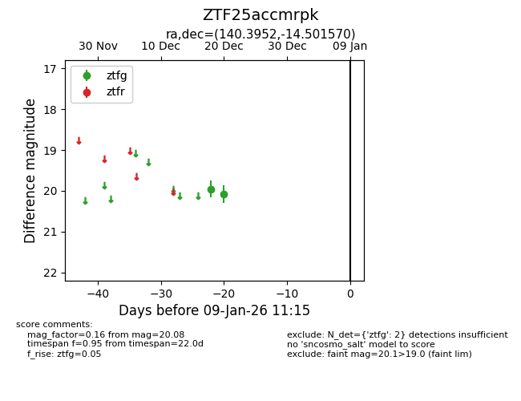
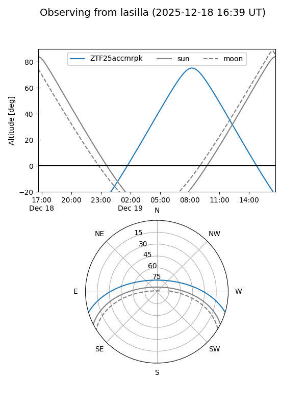
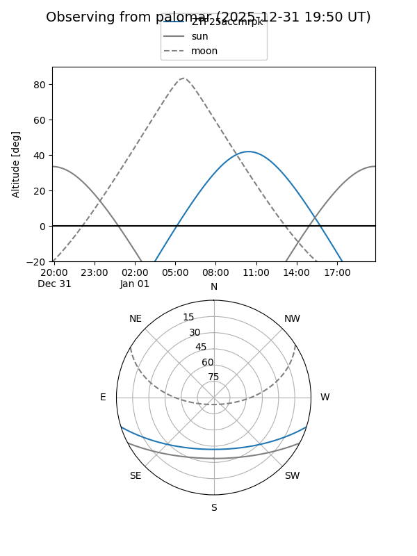

ZTF25accmrpk
Target ZTF25accmrpk at 2025-12-18 13:42
Aliases and brokers:
FINK: fink-portal.org/ZTF25accmrpk
Lasair: lasair-ztf.lsst.ac.uk/objects/ZTF25accmrpk
ALeRCE: alerce.online/object/ZTF25accmrpk
alt names
ZTF25accmrpk (ztf,fink_ztf)
Coordinates:
equatorial (ra, dec) = 140.3952,-14.50157
equatorial (HMS+DMS) = 09:21:34.85,-14:30:05.65
galactic (l, b) = (245.5768,+24.25347)
Photometry
last ztfg=19.96
1 ztfg detections
Lightcurve

Visibility


Additional plots